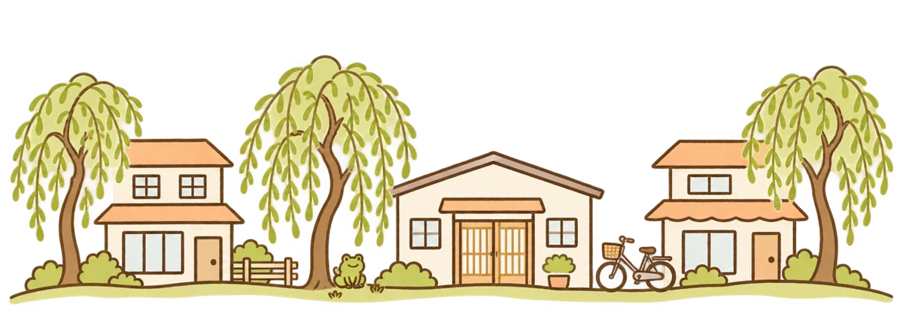
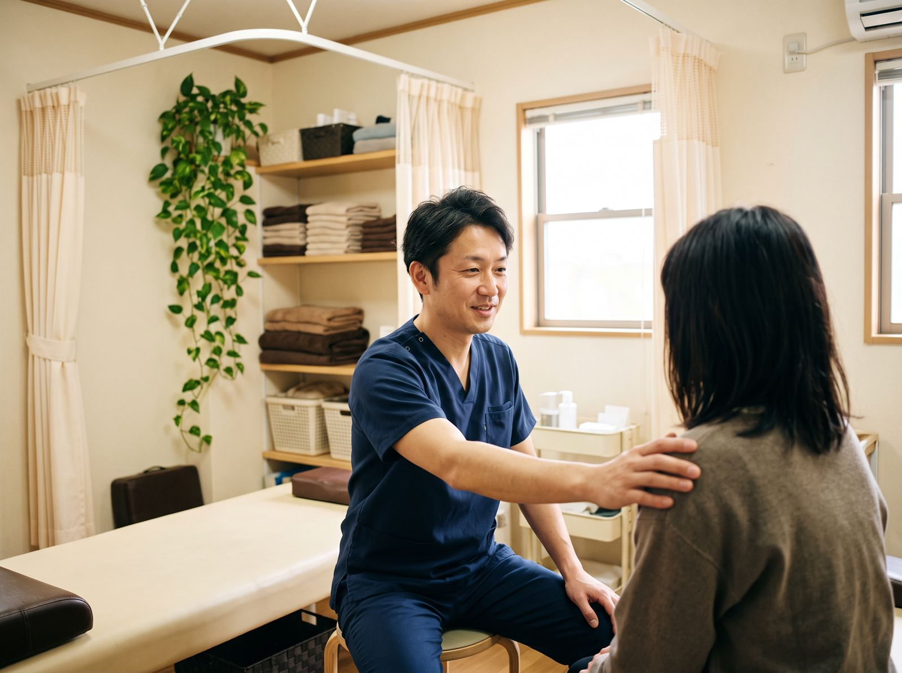
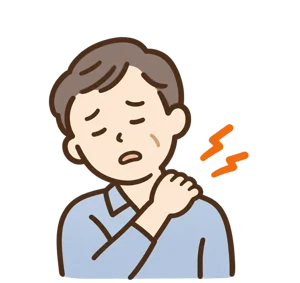
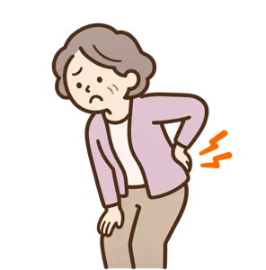
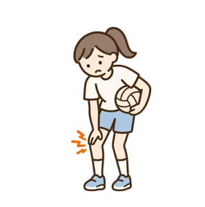
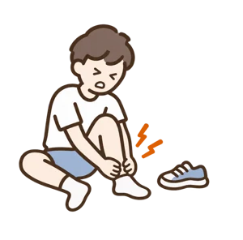
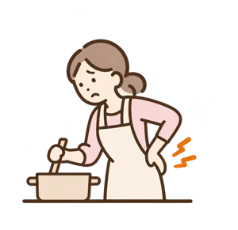
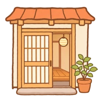
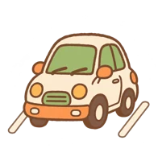
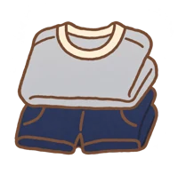

けがのことも、
肩や腰のことも、
気軽に相談を。
やなぎ通り沿いの接骨院です。捻挫や打撲などのけがは保険で、肩・首・腰のつらさは自費で施術しています。
予約なしでも受け付けています


こんなときに来てください
- 肩こり

首の痛み自費 - 腰の

重さ・痛み自費 - 部活や

運動のけが保険 - 捻挫・

打撲保険 - 家事や

立ち仕事の疲れ自費
保険が使えるか
分からないときは、
電話で聞いてください。

予約なしでも受付電話で予約した方が先になります

駐車場 6 台院の前に停められます

着替えの貸し出し短パンと T シャツがあります

受付時間
| 月・火・水・金 | 9:00〜12:00 15:00〜20:00 |
|---|---|
| 木・土 | 9:00〜13:00 午後はお休み |
| 日・祝 | お休み |
夕方 17 時からは部活帰りの学生さんで混みます。待ちたくない方は、電話で時間を決めてから来てください。
施術中は電話に出られないことがあります。少し時間をおいて、もう一度かけてください。
お知らせ: 11月23日(月・祝)と、12月29日(火)〜1月3日(日)はお休みです。
料金税込・目安です
保険けがの施術
骨折・脱臼・打撲・捻挫・挫傷(肉離れ)など、いつ・どこで・どうしたかがはっきりしているけがは保険が使えます。
- 初回1,500 円前後
- 2 回目から500〜800 円前後
3 割負担のときの目安です。負担の割合や、けがをした場所の数で変わります。骨折・脱臼は、応急の手当てのあとは医師の同意が必要です。
自費肩・首・腰のつらさ
長く続く肩こりや腰の重さ、疲れは保険が使えないため、自費になります。
- 肩・首の手技 20 分3,300 円
- 姿勢と骨盤の調整 30 分4,400 円
- 初回のみ 問診・検査料1,100 円
お支払いは現金と QR コード決済です。
初めての方へ電話でよく聞かれることを、先にまとめました
- 保険は使えますか
- けがなら使えます。慢性の肩こりや疲れは保険の対象外で、自費になります。どちらか分からないときは、電話で聞いてください。
- 予約しないと行けませんか
- 予約なしでも大丈夫です。夕方 17 時からは混むので、待ちたくない方は電話で予約をしてください。
- 何を着ていけばいいですか
- 動きやすい服で来てください。短パンと T シャツの貸し出しもあります。
- 駐車場はありますか
- 院の前に 6 台あります。満車のときは受付に声をかけてください。
- 何回通えばいいですか
- けがの具合で変わります。初めての日に、通う回数と間隔の目安をお伝えします。
来てからの流れ
- 受付で問診票を書きます(5 分ほど)
- 痛むところと、どう動かすと痛いかを確かめます
- 施術します
- 次に来る目安を一緒に決めます
持ってくるもの:保険を使う方は、マイナ保険証か資格確認書。お薬手帳があれば一緒にお持ちください。
院長から

〇〇町で 12 年やっています。
痛いところは人それぞれなので、最初によく話を聞くようにしています。分からないことは何でも聞いてください。
院長(柔道整復師)
院の中


場所と駐車場

- 住所
- 〇〇市〇〇町1-2-3(やなぎ通り沿い)
- 道順
- 〇〇小学校の前の信号を、やなぎ通りへ入ります
- 柳の並木を 200m ほど進んだ右手、白い建物です
- 駐車場
- 院の前に 6 台。満車のときは受付に声をかけてください
- 自転車
- 入口の横に止められます